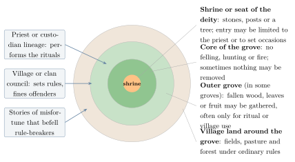

Chapter 3: Sacred Groves: Religion, Community and Conservation¶
3.1 Introduction¶
Across India, villages set aside patches of forest as the dwelling of a deity or of ancestral spirits. Within such a sacred grove, cutting trees, hunting, and sometimes even collecting dead wood or fallen fruit are forbidden or restricted, and the rules are enforced by fear of divine anger and by the village community. Some groves are a few trees around a shrine; others cover hundreds of hectares.
Sacred groves are first of all religious places. They are not, as some writing claims, “the world’s oldest conservation system” designed by far-sighted ancestors to protect biodiversity. But because they have been protected, many groves have kept old trees, rare plants, springs and wildlife that have disappeared from the surrounding landscape, and since the 1970s ecologists have drawn attention to their value for conservation (Gadgil and Vartak 1975; Ramakrishnan et al. 1998). Volume 15, Kṛṣi and Jīva Vijñāna, places sacred groves in the wider history of Indian forests and sacred trees; this chapter looks at them from the side of the communities that keep them.
Most groves share four features: they are associated with a deity, spirit or ancestors, often marked by a shrine, stones or posts; cutting, hunting, collection or entry are restricted; a village, clan, lineage or temple looks after them, often through a priest; and rituals and festivals are held in them. Regional names include devrāī (Maharashtra), devarakāḍu (Karnataka), kāvu (Kerala), kōvilkāḍu (Tamil Nadu), oraṇ (Rajasthan), devvan (Himachal Pradesh), sarnā and jāherthān (Jharkhand, Odisha, West Bengal), and law kyntang and law lyngdoh (Meghalaya).
3.2 Distribution¶
Sacred groves occur in almost every part of India, but they are most numerous and best studied in the Western Ghats (Maharashtra, Goa, Karnataka, Kerala), in the Adivasi regions of central and eastern India, in Meghalaya and elsewhere in the North-East, and in Rajasthan, where the oraṇ are large tracts of village common land dedicated to a deity. Published estimates of the total number of groves in India run from tens of thousands to over a hundred thousand; the number actually documented is much smaller, and estimates depend heavily on what is counted as a grove (Malhotra et al. 2001). Some states have conducted surveys, but there is no complete national inventory.
3.3 Regional Traditions¶
Sacred groves were noticed by colonial foresters. Dietrich Brandis, the first Inspector General of Forests, described in his Indian Forestry (1897) the sacred groves he had seen in several provinces and the protection they gave to old trees (Brandis 1897). Some colonial officers respected them; others included them in reserved forests or allowed them to be felled.
3.3.1 Devrāī of Maharashtra¶
The first systematic ecological studies of sacred groves in India were made by Madhav Gadgil and the botanist V. D. Vartak in the devrāī of the northern Western Ghats in Maharashtra in the 1970s. They showed that many groves preserved forest that had been cleared elsewhere, including large old trees and species rare in the region, and argued for their continued protection (Gadgil and Vartak 1975). Their work began the modern study of sacred groves in India.
3.3.2 Devarakāḍu of Kodagu and Kāvu of Kerala¶
In the Kodagu (Coorg) district of Karnataka there are many hundreds of devarakāḍu, dedicated to village deities and protected by Kodava and other communities. Studies have found that they retain a substantial share of the region’s native tree species in a landscape dominated by coffee plantations, though many have shrunk or been degraded.
In Kerala, the kāvu are groves associated with serpent deities (nāgas), with goddesses and with the teyyam deities of northern Kerala. Many are attached to particular households or lineages. Some preserve patches of lowland evergreen and swamp forest that have otherwise almost disappeared in the densely populated lowlands; many others have been reduced to a few trees around a shrine.
In northern Kerala many kāvu are the sites of teyyam, the ritual in which performers, after elaborate make-up and costume, become possessed by local deities, heroes and ancestors, and bless and advise the worshippers. The performers belong mostly to communities long regarded as low in the caste order, such as the Malayan, Vannan and Pulaya, who for the duration of the performance are treated as gods by the higher castes. The grove, the deity and the performance form a single tradition, and the protection of the kāvu is bound up with the continuation of the ritual.
3.3.3 Sarnā and Jāherthān¶
In the villages of the Munda, Oraon, Ho, Santal and other communities of Jharkhand, Odisha and West Bengal, the sacred grove is the centre of village religion. The Munda and Oraon sarnā and the Santal jāherthān are typically groves of sal (Shorea robusta) and other trees, where the village priest (pāhan, nāeke) makes offerings at the great festivals, such as the Sarhul or Bāhā festival when the sal trees flower. The grove is also a symbol of the village’s identity and its claim to land. As towns such as Ranchi have expanded over former village land, many sarnā sites have been surrounded by buildings; some have been encroached upon, and others survive as small walled enclosures among houses and roads, where the festivals are still celebrated by the descendants of the village’s founders. State programmes in Jharkhand have funded boundary walls around sarnā sites and lineage burial grounds to protect them from encroachment, though some Adivasi critics argue that walls turn a living grove into a monument. For this reason, the protection of the sarnā has become central to the movement for recognition of a distinct Sarna religion (Chapter 12).
3.3.4 Law Kyntang of Meghalaya¶
In the Khasi and Jaintia hills of Meghalaya, sacred forests (law kyntang, law lyngdoh, law niam) are protected by clans, villages or himas. The best known is the sacred forest of Mawphlang near Shillong, a large patch of montane forest in a largely grassy landscape, managed by the Lyngdoh clan. Most Khasi are now Christians, and in some villages the religious basis of grove protection has weakened; but many groves continue to be protected as community forests, and some Christian villages maintain them for water supply and as heritage.
Around Mawphlang, the hima (Khasi chiefdom) and its villages have also undertaken one of India’s first community forest carbon projects, launched in the early 2010s, in which a federation of villages protects and regenerates forest and receives payments for the carbon stored. The project brings new money to forest protection, but it also raises questions about who controls decisions and benefits within the federation.
3.3.5 Oraṇ of Rajasthan¶
In Rajasthan the oraṇ (also devbanī) are tracts of land around a shrine of a deity or a local hero, where trees may not be cut. They are not dense forests but woodland and scrub, providing grazing, water and shade in a dry landscape. Their protection is linked to the ethic of communities such as the Bishnoi (Chapter 2) and to the pastoral economy. Many oraṇ have been lost to encroachment, mining and government reallocation of “wasteland” (Gadgil and Guha 1995).
3.3.6 Devvan of Himachal Pradesh¶
In Kullu and other districts of Himachal Pradesh, forests attached to the village deities (devtā) are protected by rules administered by the deity’s temple organisation, whose decisions are communicated through the deity’s oracle. Some rules prohibit felling entirely; others allow collection of fallen wood and leaf litter.
3.4 Sacred Landscapes beyond the Grove¶
Groves are part of a wider sacred geography that includes hills, rocks, springs, lakes, rivers and memorial stones.
Sacred hills. The Niyamgiri hills of the Dongria Kondh (Chapter 11) are one example. Another is the hill that Jains revere as Sammed Shikharji (Parasnath) in Jharkhand, where many Tirthaṅkaras are believed to have attained liberation, and which Santals revere as Maraṅ Buru, the seat of their great deity and the site of the regional gatherings described in Section 11.2. In 2023 a controversy over tourism and over restrictions demanded by Jain organisations led Santal organisations to assert their own claim to the hill. The same landscape can be sacred to different communities, and the claims of Adivasi religions are easily overlooked when they meet a better-organised tradition.
Sacred lakes. Khecheopalri lake in western Sikkim is sacred both to the Lepcha, the indigenous people of Sikkim, and to Buddhists; fishing and the felling of trees around it are forbidden.
Stones. Memorial stones and megaliths are a feature of many Adivasi landscapes. The Munda and Ho bury the bones of their dead under flat stones (sasan diri) in a lineage burial ground, which is evidence of the lineage’s ancestral right to village land; the Khasi and Jaintia erected monoliths in memory of their dead, of which the cluster at Nartiang in the Jaintia hills is among the most impressive; and Naga villages raise stones to commemorate feasts of merit.
These sacred places carry knowledge of history, kinship and land rights as well as religion, and their destruction by mining, dams or roads is experienced as an attack on the community itself.
3.5 Sacred Species and Clan Totems¶
Protection extends in many communities to particular species as well as places. Trees such as the sal, karam, mahua, banyan and pipal are honoured in ritual and often spared when land is cleared. Among the Bishnoi, protection extends to all green trees and wild animals (Chapter 2).
Many Adivasi communities of central and eastern India are divided into exogamous clans, each associated with an animal, plant or object (a totem), which members of the clan may not kill, eat or use. Oraon clan names are a familiar example. S. C. Roy recorded them with their totems, among them Ekkā (tortoise), Lakṛā (tiger), Minj (a fish), Tirkī (young mice), Tiggā (monkey), Kujūr (a creeper) and Xaxa (crow) (Roy 1915); the glosses follow his account, and usage varies between villages. The Santal are divided into twelve clans (pāris), among them Hansda, Murmu, Kisku, Hembrom, Marndi, Soren and Tudu, each with its own associations and observances; the Munda have many kili (clans) with totemic names. These clan names are now carried as surnames by millions of people.
Totemic prohibitions are sometimes presented as conservation rules. Their effect on any particular species is usually small, since only members of one clan observe each prohibition. Their importance lies elsewhere: they express a view of kinship between human groups and other living beings, and they organise marriage and social life.
3.6 Ecological Value¶
Many studies have found that sacred groves contain more native plant species, larger and older trees, and more species of restricted distribution than the degraded forests and farmland around them; some species in the Western Ghats have been recorded only from sacred groves. Groves protect springs and streams, provide habitat for birds, bats and insects, and serve as reservoirs from which plants can spread back into the surrounding landscape (Ramakrishnan et al. 1998; Malhotra et al. 2001).
The value of groves should not be exaggerated. Many are small, isolated and invaded by exotic weeds such as Lantana camara; protection may extend only to certain trees or certain activities; and some groves are planted or managed rather than “relics” of primeval forest. Their conservation value varies greatly, and needs to be assessed grove by grove.
3.7 Governance¶
Grove protection works through belief and social sanction together (Figure 3.1). The commonest rule forbids felling living trees, sometimes with exceptions for ritual needs; hunting and fire are usually forbidden too. Many groves restrict the gathering of fruit, fuelwood or leaves, and some forbid removing anything at all. Entry to the inner area may be limited to the priest or to certain times. Stories of misfortune that befell those who broke the rules are told and retold. The priest or the lineage responsible for the grove performs the rituals, and the village council punishes offenders. Where the community is united and the belief strong, protection can last for centuries; where either weakens, groves are quickly lost.

3.8 Threats¶
The first threat is often on paper. Many groves are recorded as government land, revenue “wasteland” or forest, and can be allotted or diverted without the community’s consent. Roads, dams, mines, quarries and the growth of towns then destroy them directly; bauxite and coal mining threaten groves in Odisha and Jharkhand. In Kerala, Tamil Nadu and Karnataka many groves have been cleared for concrete temples, so that a built shrine replaces the living grove. Conversion, migration and the weakening of village institutions can remove the basis of protection from within. And small groves surrounded by farmland suffer from weeds, drying and the other effects of isolation.
3.9 Legal Status¶
Most sacred groves have no specific legal protection. Some lie within reserved or protected forests, where the forest department controls them; others are on revenue or private land. Three instruments can now be used. The Wild Life (Protection) Amendment Act of 2002 created “community reserves” on community or private land, a category that can include groves. Under the Biological Diversity Act of 2002, state governments can declare biodiversity heritage sites in consultation with local bodies; the first, declared in Karnataka in 2007, was the Nallur tamarind grove near Bengaluru, an old grove protected by local tradition. In forest areas, the Forest Rights Act allows communities to claim community forest resource rights, including the right to protect and manage groves according to their customs (Section 11.4). Each option has its limits, and many conservationists and community organisations argue that the most important protection is secure community rights over the land.
3.9.1 Restoration and New Groves¶
Not all change is loss. In several regions communities and organisations have restored degraded groves by removing weeds, planting native species and renewing rituals, and some villages have dedicated new groves to their deities. Schools and local biodiversity committees have used sacred groves for teaching about local plants and animals. Such efforts work best when they are led by the communities that own and worship in the groves and respect their religious character; attempts to turn groves into parks for visitors, with paths, benches and signboards, have sometimes damaged the very qualities that made them valuable.
3.9.2 Who Speaks for the Grove?¶
Debates about sacred groves often involve several parties with different interests: the families or clans who own or worship in a grove; the village as a whole; the forest or revenue department that holds the land on paper; conservation scientists who value it for its species; and, increasingly, tourists and religious organisations from outside. Each may describe the grove differently, as a deity’s home, a lineage’s property, a forest, a biodiversity hotspot or an attraction. Conflicts arise when one of these descriptions is used to override the others, for example when a grove is fenced for conservation and the villagers are barred from their own rituals, or when a temple trust builds over it. Lasting protection depends on recognising that the grove belongs first to the community whose deity resides in it. That principle has costs, too: a community may choose to clear or build over its own grove, and conservationists then face the question of whose judgement should prevail. The proposals most often made, from correct land records to the recognition of village managers, are gathered in Section 14.13.
Key Points
-
Sacred groves are first of all religious places, protected by belief and community sanction.
-
Many groves preserve native species and springs, but their ecological value varies and should not be exaggerated.
-
Groves are part of a wider sacred geography of hills, lakes, stones and species.
-
Most groves lack legal protection; secure community rights are the most important safeguard.